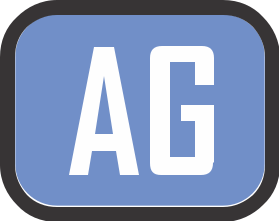
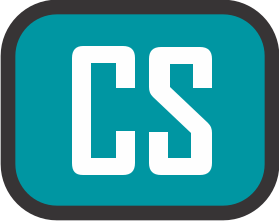
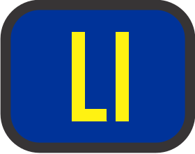
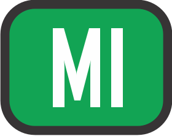
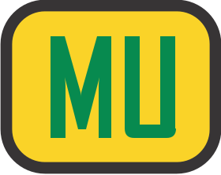
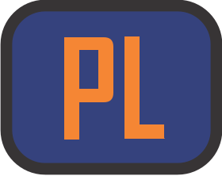

<!DOCTYPE html>
<html lang="pt-br">
<head>
    <meta charset="UTF-8">
    <meta http-equiv="X-UA-Compatible" content="IE=edge">
    <meta name="viewport" content="width=device-width, initial-scale=1.0, maximum-scale=1.0, user-scalable=0">
    <title>Municípios de atuação das empresas do Sistema Rodoviário Intermunicipal de Passageiros - Sitrip</title>
    <link rel="stylesheet" href="style.css">
    <link rel="stylesheet" href="leaflet/leaflet.css">
</head>
<body>
    <main id="mapa"></main>  
</body>
</html>

<script src="leaflet/leaflet.js"></script>
<script src="dados/municipios.js"></script>
<script src="dados/ag.js"></script>
<script src="dados/al.js"></script>
<script src="dados/co.js"></script>
<script src="dados/cs.js"></script>
<script src="dados/ea.js"></script>
<script src="dados/ex.js"></script>
<script src="dados/jo.js"></script>
<script src="dados/li.js"></script>
<script src="dados/ma.js"></script>
<script src="dados/mi.js"></script>
<script src="dados/mr.js"></script>
<script src="dados/mu.js"></script>
<script src="dados/pl.js"></script>
<script src="dados/pr.js"></script>
<script src="dados/re.js"></script>
<script src="dados/sg.js"></script>
<script src="dados/sr.js"></script>
<script src="dados/su.js"></script>
<script type="text/javascript">

    // definir vista inicial do mapa
    const lat = -19.63224019048383;
    const lng = -40.49560546875;

    // definindo zoom
    const zoom = 8;
     
    // alterar posição do zoom
    var map = L.map("mapa", {
        zoomControl: true,
        zoomSnap: 0.25 // permite definir níveis mais detalhados de zoom
    }).setView([lat, lng],zoom);

    // inserir logo da Ceturb no mapa
    let logomarca = L.control({position:"bottomleft"})
        logomarca.onAdd = function(map) {
            let img = L.DomUtil.create('img','logo')
            img.src = 'icones/logoceturb.png'
            img.style.opacity = 0.8,
            img.style.width = "120px"
            return img;
        }
        logomarca.addTo(map)
    
    // Posicionar tile com labels para a primeira camada
    map.createPane('labels');
    map.getPane('labels').style.zIndex = 650; // define a ordem da camada
    map.getPane('labels').style.pointerEvents = 'none';

    //  base com a demarcação dos território
    var CartoDB_PositronNoLabels = L.tileLayer('https://{s}.basemaps.cartocdn.com/light_nolabels/{z}/{x}/{y}{r}.png', {
	attribution: '&copy; <a href="https://www.openstreetmap.org/copyright">OpenStreetMap</a> contributors &copy; <a href="https://carto.com/attributions">CARTO</a>',
	subdomains: 'abcd',
	minZoom: zoom,
    }).addTo(map);

    // base com somente nomes dos lugares
    var CartoDB_PositronOnlyLabels = L.tileLayer('https://{s}.basemaps.cartocdn.com/light_only_labels/{z}/{x}/{y}{r}.png', {
	    attribution: '&copy; <a href="https://www.openstreetmap.org/copyright">OpenStreetMap</a> contributors &copy; <a href="https://carto.com/attributions">CARTO</a>',
	    subdomains: 'abcd',
	    minZoom: zoom,
        pane: 'labels'
    }).addTo(map);

    // mostra seleção do munícipio
    function highlightFeature(e){
        var layer = e.target;

        layer.setStyle({
            weight: 5,
            color: '#666',
            dashArray: '',
            fillOpacity: 0.7
        });

        if (!L.Browser.ie && !L.Browser.opera && !L.Browser.edge) {
            layer.bringToFront();
        }
    }

    // limpar seleção
    function resetHighLight(e) {
        municipios.resetStyle(e.target)
    }

    // zoom no município
    function zoomToFeature(e) {
        map.fitBounds(e.target.getBounds());
    }

    // eventos no mouse reune todas as funções
    function onEachFeature(feature, layer) {
        layer.on({
            mouseover: highlightFeature,
            mouseout: resetHighLight,
            click: zoomToFeature
            
        });
        layer.bindTooltip(feature.properties.nome);
    }


    // obtendo geojson municípios
    var municipios = L.geoJSON(basemunicipios, {
        onEachFeature: onEachFeature
    }).addTo(map);

    // selecionar o icone
    function getImagem(e) {
        return e == 'AG' ? 'icones/ag.svg':
               e == 'AL' ? 'icones/al.svg':
               e == 'CO' ? 'icones/co.svg':
               e == 'CS' ? 'icones/cs.svg':
               e == 'EA' ? 'icones/ea.svg':
               e == 'EX' ? 'icones/ex.svg':
               e == 'JO' ? 'icones/jo.svg':
               e == 'LI' ? 'icones/li.svg':
               e == 'MA' ? 'icones/ma.svg':
               e == 'MR' ? 'icones/mr.svg':
               e == 'MI' ? 'icones/mi.svg':
               e == 'MU' ? 'icones/mu.svg':
               e == 'PL' ? 'icones/pl.svg':
               e == 'PR' ? 'icones/pr.svg':
               e == 'RE' ? 'icones/re.svg':
               e == 'SG' ? 'icones/sg.svg':
               e == 'SR' ? 'icones/sr.svg':
               e == 'SU' ? 'icones/su.svg':
                           'icones/ni.svg';
    }
    
    
    // definir o icone
    function getIcone(feature, latlng){   
        let myIcon = L.icon({
            iconUrl: getImagem(feature.properties.name),
            iconSize: [25,25],
            
        })
        return L.marker(latlng, {icon:myIcon})
    }
    
    // variavel para passar o icone
    var icone = {pointToLayer: getIcone}

    // obtendo geojson
    var ag = L.geoJSON(aguiabranca, icone,).bindPopup("Águia Branca");
    var al = L.geoJSON(alvorada, icone).bindPopup("Alvorada");
    var co = L.geoJSON(cordial, icone).bindPopup("Cordial");
    var cs = L.geoJSON(costasul, icone).bindPopup("Costa Sul");;
    var ex = L.geoJSON(expressatransportes, icone).bindPopup("Expressa Transportes");
    var ea = L.geoJSON(expressoaracruz, icone).bindPopup("Expresso Aracruz");
    var jo = L.geoJSON(joanadarc, icone).bindPopup("Joana D&#180arc");
    var li = L.geoJSON(liriodosvales, icone).bindPopup("Lírio dos Vales");
    var ma = L.geoJSON(maraberto, icone).bindPopup("Mar Aberto");
    var mr = L.geoJSON(marilandia, icone).bindPopup("Marilândia");
    var mi = L.geoJSON(minastur, icone).bindPopup("Minastur");
    var mu = L.geoJSON(mutumpreto, icone).bindPopup("Mutum Preto");
    var pl = L.geoJSON(planeta, icone).bindPopup("Planeta");
    var pr = L.geoJSON(pretti, icone).bindPopup("Pretti");
    var re = L.geoJSON(realita, icone).bindPopup("Real Ita");
    var sg = L.geoJSON(saogabriel, icone).bindPopup("São Gabriel");
    var sr = L.geoJSON(saoroque, icone).bindPopup("São Roque");
    var su = L.geoJSON(sudeste, icone).bindPopup("Sudeste");

    // agrupando as empresas
    var grupoEmpresas = L.layerGroup([ag,al,co,cs,ex,ea,jo,li,ma,mr,mi,mu,pl,pr,re,sg,sr,su]).addTo(map);
       
    // definindo controle do grupo
    var overlayerGrupo = {
        'Todas as empresas': grupoEmpresas,
    }
    
    // definindo controle individual e icones
    var overlayer = {
        '<span class="descricao">Águia Branca</span>': ag,
        '<span class="descricao">Alvorada</span>': al,
        '<span class="descricao">Cordial</span>': co,
        '<span class="descricao">Costal Sul</span>': cs,
        '<span class="descricao">Expressa Transportes</span>': ex,
        '<span class="descricao">Expresso Aracruz</span>': ea,
        '<span class="descricao">Joana D&#180arc</span>': jo,
        '<span class="descricao">Lírio dos Vales</span>': li,
        '<span class="descricao">Mar Aberto</span>': ma,
        '<span class="descricao">Marilândia</span>': mr,
        '<span class="descricao">Minastur</span>': mi,
        '<span class="descricao">Mutum Preto</span>': mu,
        '<span class="descricao">Planeta</span>': pl,
        '<span class="descricao">Preti</span>': pr,
        '<span class="descricao">Real Ita</span>': re,
        '<span class="descricao">São Gabriel</span>': sg,
        '<span class="descricao">São Roque</span>': sr,
        '<span class="descricao">Sudeste</span>': su,
    }
    
    //inserindo controles no mapa
    var controle = L.control.layers(null,overlayer, {collapsed:true,position:"bottomright"}).addTo(map);
    var controlGrupo = L.control.layers(null,overlayerGrupo, {collapsed:false, position:"bottomright"}).addTo(map);
    
    
</script>